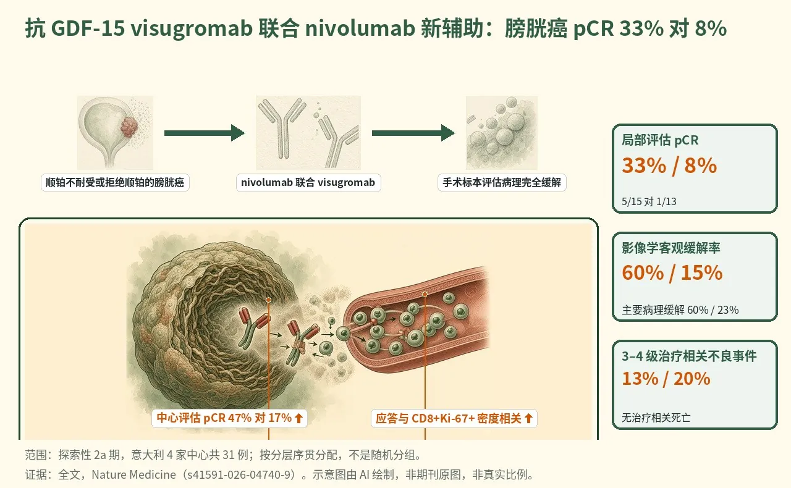

抗GDF-15联合PD-1新辅助：膀胱癌pCR 33%对8%
探索性 2a 期 GDFATHER-NEO 试验在 31 例不适合或拒绝顺铂的肌层浸润性膀胱癌（MIBC）患者中，比较 3 个周期新辅助纳武利尤单抗联合抗 GDF-15 中和抗体 visugromab 与纳武利尤单抗联合安慰剂：本地评估 pCR 33%（5/15）对 8%（1/13），MPR 60% 对 23%，影像学 ORR 60% 对 15%，中心病理复核 pCR 47% 对 17%；3–4 级治疗相关不良事件 13% 对 20%。应答与基线 CD8⁺ 及增殖性 CD8⁺Ki-67⁺ T 细胞密度相关，而与 PD-L1 CPS 和基线 GDF-15 水平无关。

- 肿瘤高表达的 GDF-15 作为局部免疫抑制因子与“T 细胞排斥因子”，削弱 PD-1 阻断疗效
- visugromab 中和 GDF-15，纳武利尤单抗阻断 PD-1，两者同日给药、每 4 周一次
- 3 个周期后，联合组本地 pCR 33%、中心复核 pCR 47%，对照组分别为 8% 与 17%
- 应答者基线即有较高的 CD8⁺ 与增殖性 CD8⁺Ki-67⁺ T 细胞密度：GDF-15 可能压制的是“已就位”的 T 细胞
示意图概括了 GDF-15 作为免疫检查点样抑制分子的作用方式、GDF-15 与 PD-1 双阻断的给药流程，以及作者提出的“GDF-15 限制预存瘤内 CD8⁺ T 细胞活性、中和后释放抗肿瘤应答”的假设模型。
研究背景与待解问题
MIBC 的围手术期治疗正处在转折点：度伐利尤单抗联合吉西他滨–顺铂（NIAGARA 中 pCR 由 27.5% 升至 37.3%）以及恩诺单抗（enfortumab vedotin）联合帕博利尤单抗（EVP）均已凭借 3 期试验获批，后者在不适合或拒绝顺铂人群（KEYNOTE-905/EV-303）中的 pCR 达到 57.1%，成为该人群新的参照标杆。另一方面，估计 ≥50% 的 MIBC 患者不适合顺铂新辅助化疗，而单药 PD-1/PD-L1 抑制剂的新辅助 pCR 仅 29%–37%，纳武利尤单抗加伊匹木单抗为 46%；仍有超过半数患者达不到病理缓解，安全的保膀胱机会也很少。如何以耐受良好、免化疗的方式增强 PD-1 阻断，是这一领域的核心问题。
GDF-15 属于 TGF-β 超家族，在妊娠与组织应激中有明确生理作用，在包括膀胱癌在内的多种肿瘤中过表达，已被证实是强效的局部免疫抑制因子和 T 细胞排斥因子，也是 PD-1/PD-L1 阻断耐药的决定因素之一。在首次人体试验 GDFATHER-01 中，visugromab 联合纳武利尤单抗在 PD-1/PD-L1 阻断进展的晚期患者中显示活性，尿路上皮癌 ORR 为 18.5%（95% CI 6.3–38.1%），中位缓解持续时间 28.8 个月。待回答的问题是：在未经治疗、对检查点抑制剂初治的早期 MIBC 中，加入 GDF-15 中和能否显著放大 PD-1 阻断的效果，其效应量大约是多少，以及哪些患者更可能获益。
研究设计
入组标准为年龄 ≥18 岁、新诊断的 cT2–T4a N0 M0 MIBC，按改良 Galsky 标准不适合顺铂或拒绝顺铂化疗，ECOG 0–1，且被认为在 12 周新辅助治疗后适合 RC；既往系统抗肿瘤治疗、膀胱放疗或部分膀胱切除、入组时即拒绝 RC 者被排除。一个值得注意的细节是：由于二甲双胍会改变循环 GDF-15 浓度，2 型糖尿病患者需在治疗前停用二甲双胍并换药——这体现了以 GDF-15 为靶点的试验在设计上的特殊考量。
31 例患者按 T 分期与 PD-L1 CPS 分入 4 层，层内由申办方中心按 A–B–A–B 顺序分配，直至每组至少 12 例疗效可评估。作者选择“顺序分配+患者盲法”而非随机化，理由是各层样本过小、需避免组间失衡，且这是 GDF-15/PD-1 双阻断首次用于以治愈为目的的早期患者；研究者与申办方知晓分组，患者不知情，本地与中心病理医师及影像复核者均在盲态下评估。visugromab（CTL-002）是一种人源化、铰链稳定化的 IgG4 单克隆抗体，以高亲和力结合 GDF-15；基于首次人体试验的 PK/PD 建模，20 mg/kg 每 3–4 周一次即可实现循环 GDF-15 的完全中和，因此选用与纳武利尤单抗 480 mg 同步的每 4 周方案。末次给药后 4–8 周影像再分期并行 RC；拒绝 RC 者经多学科讨论后可选 re-TURBT（该选项通过方案修订引入）。病理终点将 RC 与 re-TURBT 标本合并报告。转化研究部分以 6+1 色多重免疫荧光（CD4、CD8、Ki-67、FoxP3、PD-L1、GDF-15，叠加泛细胞角蛋白）定量基线瘤内免疫细胞，并检测血清 GDF-15、瘤内 pro-GDF-15 H 评分、CXCL9/CXCL10/IFN-γ、visugromab 血药浓度与抗药抗体。
核心结果
基线与治疗完成情况
两组关键特征经分层后基本均衡：19/31（61%）为 cT2 N0 M0，22 例（71%）为男性；CPS ≥10 者对照组 8/15（53%）、联合组 9/16（56%）；因肾功能受损或听力下降不适合顺铂者分别为 6/15（40%）与 5/16（31%），其余拒绝顺铂。28 例完成全部 3 个周期（A 组 13 例、B 组 15 例），3 例（A 组 2 例、B 组 1 例）因不良事件在第 1 周期后停止新辅助治疗。手术方面，19 例（61%）仅行 RC（A 组 10 例、B 组 9 例），9 例（29%）行 re-TURBT（A 组 3 例、B 组 6 例），其中 B 组 1 例随后再行 RC；3 例未行方案规定手术。辅助治疗共 5 例，全部在对照组。
病理缓解：本地与中心复核方向一致
本地评估的 pCR 联合组 5/15（33%），对照组 1/13（8%）；再计入残余 ypTa、ypTis 或 ypT1 N0 者（对照组 2 例、联合组 4 例），MPR 为 60% 对 23%。中心病理复核与本地评估大体一致，且 pCR 差距更大：联合组 7/15（47%），对照组 2/12（17%）；MPR 为 9/15（60%）对 4/12（33%）。在每个 T 分期及中心评估的 PD-L1 CPS 亚组中，联合组病理缓解率均更高，但各亚组例数很少。作者将此概括为病理与影像缓解率较单药高出约 3–4 倍。需要冷静看待的一点是：33% 的 pCR 落在既往免化疗新辅助免疫方案报告的范围内，尚未超过 EVP 等新标准。
影像缓解：与病理并不完全同步
本地 RECIST v1.1 评估中，联合组 7 例完全缓解、2 例部分缓解，ORR 9/15（60%），完全缓解率 47%（95% CI 21–73%）；对照组 2 例部分缓解，ORR 2/13（15%）。中心影像复核的 ORR 为 8/16（50%，含 2 例完全缓解，13%）对 4/12（33%）。这里存在一个值得临床注意的反差：联合组中心评估的影像完全缓解率（13%）远低于中心评估的 pCR（47%），而本地评估呈相反关系。作者据此明确指出，在这一场景下影像缓解不能替代病理缓解，其表现可能取决于中心经验与影像方式——这对未来以临床完全缓解为依据的保膀胱策略是一个重要提醒。可评估者中以疾病进展为最佳总体疗效者 4 例（每组 2 例），其中各 1 例因不良事件提前停药、按分析计划视为无应答。
无事件生存：早期、描述性
截至 2026 年 7 月 15 日共记录 6 个 EFS 事件，每组 3 个，两组中位 EFS 均未达到。所有 pCR 患者均无事件，包括联合组 4 例仅行 re-TURBT、未做膀胱切除的患者；6 个事件全部发生在病理无应答或未完成方案规定手术的患者中。由于事件少、随访短，且对照组 5 例接受了辅助治疗（联合组无），这些数据只能视为描述性，无法反映长期获益。
转化研究：应答与预存的增殖性 CD8⁺ T 细胞状态相关
两组基线瘤内免疫细胞密度与表型无显著差异，但联合组总 T 细胞、CD8⁺ 与 CD8⁺Ki-67⁺ T 细胞的中位密度数值上更高。在联合组内，出现任何 MPR（含 pCR）的患者基线总 CD8⁺ T 细胞与增殖性 CD8⁺Ki-67⁺ T 细胞密度高于无应答者（P = 0.008 与 P = 0.003）；对照组内未见这种关联。为排除“联合组基线浸润更高”造成的偏倚，作者将比较限定在两组共同覆盖的基线 CD8⁺ 密度范围（≤300 个/mm²）内，pCR 仍为联合组 4/11 对对照组 1/12。另一方面，应答在中心评估 CPS 的全范围内均有出现，PD-L1 无法区分应答者；基线血清 GDF-15 与瘤内 GDF-15 H 评分在两组间相当，既与 T 细胞浸润无关，也不预测病理缓解。CXCL9 与 IFN-γ 的治疗中浓度多低于定量下限，CXCL10 个体差异大且组间无一致差异，因此未能在外周捕捉到明确的药效学信号。
药代动力学与安全性
visugromab 血清浓度在患者间相近，与 GDFATHER-01 一致；平均浓度在给药间隔内虽有下降，但 4 周内始终高于 100 µg/mL，提示整个治疗期 GDF-15 持续被中和。安全性方面，所有患者均有任意级别不良事件；3–4 级治疗期间出现的不良事件（TEAE）对照组 12/15（80%）、联合组 8/16（50%）。任意级别 TRAE 在联合组更常见（88% 对 53%），主要为乏力、瘙痒和甲状腺功能减退；3–4 级 TRAE 则联合组更少（13% 对 20%），包括两组的转氨酶升高、对照组的甲状腺功能减退与肌痛以及联合组的间质性肺病（联合组的肝酶升高发生在免疫介导肝病背景下）。免疫相关不良事件对照组 4/15（27%）、联合组 5/16（31%），3–4 级分别为 3/15（20%）与 2/16（13%）。手术推迟见于对照组 5 例、联合组 6 例，除对照组 1 例非治疗相关毒性外，其余为疾病进展（每组 1 例）或后勤原因。联合组 1 例存在既往即有、一过性可检出的抗药抗体，对 PK 与临床结局无明显影响。作者认为未出现 visugromab 特异的安全性信号。
机制解读
论文所证实的： 在这一小样本、非随机但分层且患者盲法的试验中，新辅助 3 个周期纳武利尤单抗联合 visugromab 的病理与影像缓解率在本地与中心两套评估中都高于纳武利尤单抗加安慰剂，3–4 级 TRAE 未见增加，visugromab 的暴露足以在 4 周间隔内维持高血药浓度。联合组应答者具有更高的基线 CD8⁺ 与增殖性 CD8⁺Ki-67⁺ T 细胞密度，而 PD-L1 CPS 与基线 GDF-15 水平均不预测应答。
作者假设： 作者提出，GDF-15 抑制的是已经存在于肿瘤内的 CD8⁺ T 细胞的活性，中和 GDF-15 后这些细胞得以发动更有效的抗肿瘤应答；在共同 CD8⁺ 密度范围内联合组 pCR 仍更高，被用来论证联合疗效并非仅由基线免疫浸润差异解释。在早期疾病、短程治疗的场景中，功能性免疫状态可能比 PD-L1 或 GDF-15 的静态测量更有信息量。从抗体药物角度看，这与 GDFATHER-01 中“高 GDF-15 伴低 CD8⁺ 浸润、阻断后诱导 CXCL9/CXCL10”的观察部分不一致；作者指出本试验的基线 GDF-15 水平明显低于 GDFATHER-01 中的晚期黑色素瘤与非小细胞肺癌队列，GDF-15 相关生物标志物的意义可能高度依赖背景。由于联合组 pCR 率高、可获得的含肿瘤治疗后标本有限，GDF-15 阻断在瘤内究竟改变了什么，本研究尚无法回答；上述模型仍属假设生成。
局限与不确定
- 每组仅 15–16 例，未设检验假设、无样本量计算，所有组间比较均为描述性；层内顺序分配而非随机化，申办方一侧无分配隐藏，存在选择偏倚与时期效应的可能，也无法平衡未观察到的混杂因素。
- 对照组本地 pCR 仅 8%，低于一般预期；作者引用 PrE0807 中纳武利尤单抗单药在 12 例中的 pCR 17%、MPR 25% 认为对照组未明显表现欠佳，但小样本下无法排除。
- pCR 合并了 RC 与 re-TURBT 标本，未行淋巴结清扫者的 N 分期存在不确定性（联合组 1 例 re-TURBT 后行 RC 发现 N1），与其他新辅助试验的可比性受限；疗效分析采用方案定义的可评估人群。
- EFS 仅 6 个事件、随访限于术后 1 年，无法评估长期获益；对照组的辅助治疗进一步干扰 EFS 解读。生物标志物分析未校正多重比较，治疗中瘤内样本不足。
- 仅在意大利 4 家中心开展；试验由 visugromab 研发方 CatalYm 资助并参与数据管理与分析，多名作者为其现任或前任员工或持有相关专利与股权。
临床/产业意义
对于不能或不愿接受顺铂的 MIBC 患者，这项研究首次在检查点抑制剂初治、以治愈为目标的人群中给出了 GDF-15 与 PD-1 双阻断的初步效应量估计：联合方案以 3 个周期、每 4 周一次的免化疗方式取得 33%（中心复核 47%）的 pCR，且毒性未叠加。客观地说，在 EVP 已将该人群 pCR 推高到 57.1% 的当下，visugromab 加纳武利尤单抗本身并不足以挑战新标准；它更现实的价值在于——作为一种耐受良好、作者预期其作用机制不局限于特定 PD-(L)1 骨架的免疫增敏剂，与 EVP 等更强方案叠加，以提高临床完全缓解率，从而让更多患者有机会进入保膀胱或降阶梯治疗路径。联合组 4 例仅 re-TURBT 的 pCR 患者无复发，虽例数极少，也与这一方向相符。产业层面，作为一个 IgG4 型细胞因子中和抗体，visugromab 在非小细胞肺癌与肝细胞癌中的随机 2b 期试验正在招募；GDFATHER-NEO 提示，筛选获益人群可能更应关注预存的增殖性 CD8⁺ T 细胞状态，而非 GDF-15 本身的丰度。最终仍需更大规模、随机、长期随访的新辅助试验来验证其对保膀胱率、治愈率与总生存的影响。